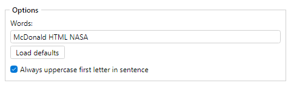

Rewrites whole words to the exact spelling from a casing list. Words are split by the current word separator (see Space Character).
Words not in the list stay unchanged. You can also uppercase sentence initials using Sentence End Characters.
Words: and or with RMX
03 - WiTH Or Without You Rmx >>> 03 - with or Without You RMX
Words: and us them (word separator _; uppercase sentence initials on)
US_AND_THEM >>> Us_and_them
Place Sentence End Characters before this filter when sentence-initial uppercasing should use a custom end set.